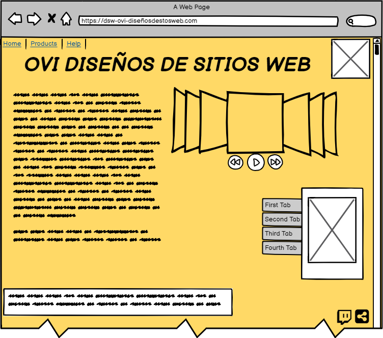

ESTRUCTURA BASICA DE HTML 5 (ETIQUETAS ATRIBUTOS Y VALORES)
OBJETIVO GENERAL
Diseñar un OVI que contenga toda la información relacionada con Estructura básica de html5 (etiquetas, atributos y
valores).
OBJETIVOS ESPECIFICOS
- Analizar la estructura basica de html5.
- Aprender la correcta escritura del codigo.
- Explicar en que consisten las etiquetas, atributos y valores.
MATERIALES
CONTENIDO
HTML5
Es la quinta revisión del lenguaje de marcado estándar que se emplea para la web. Es uno de los lenguajes de marcado más usados en todo el mundo y la razón es bastante obvia: gracias a HTML5 podemos crear la estructura de una página web.
Texto, imágenes y material multimedia pueden mostrarse correctamente gracias a HTML5. Una de sus más grandes adiciones en esta nueva versión es poder añadir audio y video sin necesidad de usar Flash u otro reproductor multimedia.
ESTRUCTURA BASICA
En HTML existe un esqueleto básico, que todos debemos de conocer porque se viene usando desde los inicios del lenguaje. Nos referimos a la conocida estructura del HEAD / BODY. Toda jerarquía de etiquetas comienza por HTML y dentro tenemos dos grandes bloques HEAD y BODY.
Hasta hace poco dentro del BODY se colocaban etiquetas como DIV, SPAN, B, etc. Pero todas las etiquetas que usábamos decían poco a aquel sistema que las leyera. ¿Qué significa DIV? pues simplemente que estamos colocando una «división» pero no especifica para qué se usa esa división.
Quizás P tiene algo más de significado, pero no deja de ser un párrafo a secas, sin decirte qué tipo de información va a contener ese párrafo.

ETIQUETAS
!DOCTYPE HTML:Es un DOCTYPE mucho más simplificado que XHTML (cuyas reglas siguen siendo usadas) y te permite usar todas las habilidades de HTML5 sin que nada de lo que ya tienes programado deje de funcionar.
HEADER:está diseñada para reemplazar la necesidad de crear divs sin significado semántico.
HGROUP:Muchos headers necesitan múltiples títulos, como un blog que tiene un titulo y un tagline explicando el blog. "hgroup" permite colocar un h1, h2 y h3 dentro del header sin afectar el SEO, permitiendo usar otro h1 en el sitio.
NAV:Igual que "header", "nav" está diseñado para que ahí coloques la botonera de navegación principal. Puedes colocar cualquier etiqueta dentro, aunque lo recomendado es usar listas "ul".
SECTION:Define un área de contenido única dentro del sitio. En un blog, sería la zona donde están todos los posts. En un video de youtube, habría un section para el video, uno para los datos del video, otro para la zona de comentarios.
ARTICLE:Define zonas únicas de contenido independiente. En el home de un blog, cada post sería un article. En un post del blog, el post y cada uno de sus comentarios sería un article.
ASIDE:Cualquier contenido que no esté relacionado con el objetivo primario de la página va en un aside. En un blog, obviamente el aside es la barra lateral de información. En el home de un periódico, puede ser el 10 área de indicadores económicos.
FOOTER:Este es obvio. Es el pie de página y todo lo que lo compone.
DIV:siempre debe usarse cuando necesites una caja con objetivos de diseño gráfico o cualquier cosa que no tenga significado semántico.
Las etiquetas semánticas, a pesar de ser claves para posicionamiento en buscadores y buen desarrollo web, no son la razón por la que todo el mundo habla de HTML5. Video, audio y animación vectorial están en la lista de prioridades y en la boca de todas las personas que evangelizan su uso.
VIDEO:Inserta video sin necesidad de plugins. Es muy fácil usarla, pero cada navegador soporta codecs diferentes de video, lo que hace necesario recodificar un video en múltiples codecs.

AUDIO:Lo mismo que video, pero sin video. Puede usar múltiples formatos, en especial mp3, pero también depende del navegador.
INPUT:ya existía como la etiqueta para insertar cajas de texto y botones. Ahora es más poderosa, con la capacidad de insertar cajas tipo “email” que se autovalidan, calendarios tipo “date”, sliders, números, entre otras.
CANVAS:Un área de dibujo vectorial y de bitmaps con Javascript. Es un API de dibujo entero para Javascript.
SVG:Una etiqueta, igual que img, para insertar dibujos y animaciones vectoriales al estilo de Flash. Todo basado en el estándar abierto SVG (Scalable Vector Graphics), derivado de XML.
ATRIBUTOS Y VALORES
Los atributos son la forma que tienen los autores de definir propiedades para un elemento. Estas propiedades habitualmente cambian la forma en que los navegadores interpretan al elemento, al cambiar su significado o presentación.
Por ejemplo, el elemento a inserta un vínculo en el documento, pero el atributo rel indica la relación entre el documento actual (el que contiene al vínculo) y el recurso de destino (al cual el vínculo está apuntando).
Los atributos son declarados indicando su nombre, seguido de un signo igual ("=") y el valor asignado entre comillas. Pero algunos atributos, que solo pueden tomar valores booleanos (verdadero o falso), aplican su valor tan sólo con su presencia.
En estos casos, los atributos pueden ser declarados con sólo indicar su nombre.
MOCKUP
